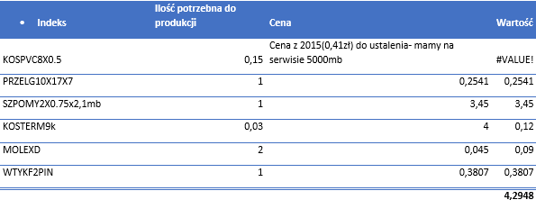

Co dzieje się w zakupach?
- Soft Touch 2.0 – nadal nie otrzymaliśmy 20 szt płytek.
- Lakierowanie przycisków:
Wysłano zapytania do:
- Gemini Tech - brak odp.
- I.S.T. Sp. z o.o - oferta gotowa - 0.45 zł/szt. Czekamy na ocenę próbek.
 - MacPrint Bis - cena 0.70 zł/szt próbki przycisków lakierowanych po całości wysłane 10/11. Próbki zaakceptowane - cena niestety bez zmian. cena 0.70 za szt bez żadnych kosztów dodatkowych.
- MacPrint Bis - cena 0.70 zł/szt próbki przycisków lakierowanych po całości wysłane 10/11. Próbki zaakceptowane - cena niestety bez zmian. cena 0.70 za szt bez żadnych kosztów dodatkowych.
- Rego wronki - cena 0,55 zł/szt

-
Otrzymaliśmy z WM Glass bardzo korzystną ofertę na szyby. Nie podpiszą z nami umowy jednak będziemy od nich zamawiać ale na początku będziemy dzielić zamówienia między WM Glass a Convex. Chcemy sprawdzić czy zamówienia będą realizowane na potwierdzany czas. Poniżej porównanie Convex vs nowe ceny WM GLASS.

- W ramach obniżenia cen chcemy zmienić gramatury przekładek z gramatury 455 na 425. Mam odp. Z działu konstrukcyjnego. W tym tygodniu podejmiemy decyzję które przekładki mają mieć obniżoną gramaturę.
- Yuanjing Zhuoli Motor – sprawdzamy ceny u nowego potencjalnego dostawcy silników z Chin.Poniżej porównanie z Wentelonem.
- Poszukujemy żarówek dla BEKO – próbki z firmy NY Lighting przekazane do dz. Konstrukcyjnego czekamy na decyzję. Dokumenty zostały sprawdzone przez p. Kamińskiego i spełniają oczekiwania. Mają też wytrzymywać siłę nacisku którą wymaga BEKO
- Mamy Problem z dostawcą Mrowiec gdyż nie wysyła nam kabla 5x0,5 twierdząc iż oczekuje na bardziej miękką osłonkę. Ma sprzęt aby pociąć dla nas twarde kable ale chciał nas za to obciążyć. Nie zgodziłam się. Jutro będzie towar od nowego dostawcy - KBM.
- Poprosiliśmy o sprawdzenie czy możemy ustandaryzować technologię w okapach. Chodzi o kable tj PRZOMY4X0.5 zmienić na PRZOMY4X0.5F -> głównie w okapach OCORM PRZOMY2X0.5 zmienić na PRZOMYP2X0.5 -> głównie w okapach OCORM / OELB Kabel 4x0.5 nie różni się niczym prócz kolorem izolacji jednego przewodu, natomiast zmiana przewodu 2x0.5 jest tylko z okrągłego na płaski.
-
Sugerujemy samodzielną produkcję wiązki WE355 (pod nowe ELBY). Jednak najpierw musimy wybrać to co zamówiliśmy u Mrowca – 2000 szt.
Poniżej obliczenia:

Koszt komponentów 4,2948
Koszt pracownika na produkcję 1szt wiązki 0,7
Suma 4,9948
Koszt produkcji wiązki u nas trzeba liczyć w granicach +/- 5zł.
Koszt zakupu gotowej wiązki to 6,10zł. - Mieliśmy reklamację blachy od dostawcy Marcegaglia – zbyt zaolejona. Temat zgłoszony do dostawcy.
- Rozważamy przeniesienie produkcji do TOT małego detalu - >ZESKOP-BI_ ZESKOP-CZ. Poprosiłam o ofertę.
- Odnotowaliśmy wzmożoną ilość reklamacji sterowań P20/P21. Odebraliśmy kilka sztuk po naprawach serwisowych i większość ma spalony rezystor R1. Badamy z dostawcą przyczynę.
- Temat automatycznego przeliczania przez system stanów minimalnych jest już na bardzo zaawansowanym etapie. Niebawem będziemy robić próby.
 Sprowadzamy próbki.
Sprowadzamy próbki.
Sprzedaż vs zakupy

Największe przyjęcia w 49 tygodniu.